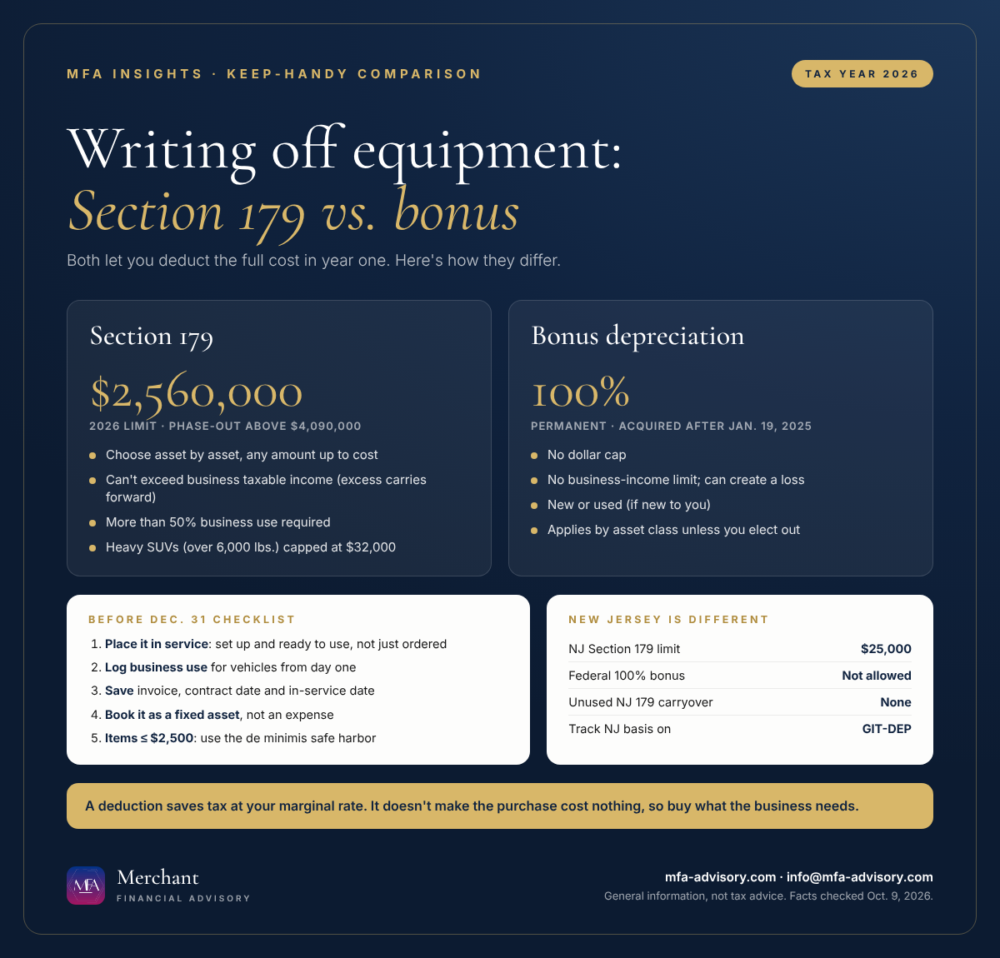

Executive summary
- Section 179 deduction 2026: You can expense up to $2,560,000 of qualifying equipment in tax years beginning in 2026. The limit starts shrinking once you place more than $4,090,000 of property in service.
- Bonus depreciation 2026: 100% first-year bonus depreciation is back, permanently, for qualifying property acquired after Jan. 19, 2025.
- The date that matters: The asset must be placed in service (set up and ready to use) by Dec. 31, 2026 to count on a calendar-year 2026 return. Ordering it isn't enough.
- New Jersey doesn't follow: NJ caps Section 179 at $25,000 and doesn't allow federal 100% bonus depreciation, so your NJ return will show a different number.
Bottom line: If you're buying equipment for the business, make sure it is placed in service by Dec. 31, 2026, and plan for a different deduction on your New Jersey return.
Every fall, business owners ask the same question: "If I buy that equipment before December 31, can I write the whole thing off this year?" For 2026 the answer is often yes, because two federal rules, the Section 179 deduction and 100% bonus depreciation, both let you deduct the full cost up front instead of spreading it over five or seven years. Here's how they differ, which one to use, and the year-end steps that make the deduction stick.

Section 179 vs. bonus depreciation: what's the difference?
Depreciation is how the tax code spreads the cost of a long-lived asset over several years. Section 179 and bonus depreciation are two ways to speed that up to year one.
| Section 179 | 100% bonus depreciation | |
|---|---|---|
| 2026 limit | $2,560,000, phased out dollar-for-dollar above $4,090,000 of purchases | No dollar cap |
| Limited to business income? | Yes. Can't exceed taxable income from your active trade or business; the excess carries forward | No. Can create or increase a loss |
| Pick and choose assets? | Yes, asset by asset, and any amount up to the cost | Applies to a whole class of property unless you elect out for that class |
| Business use | More than 50% in the year placed in service | Listed property (like vehicles) also needs more than 50% business use |
| Heavy SUVs (over 6,000 lbs.) | Capped at $32,000 for 2026 | Can cover the remaining cost |
| How you claim it | Form 4562, Part I | Form 4562, Part II (automatic unless you elect out) |
In practice, many small businesses use Section 179 first for flexibility, then let bonus depreciation pick up whatever Section 179 can't, for example when profit is low or the asset is a heavy SUV over its $32,000 cap.
What changed: 100% bonus depreciation is back
Bonus depreciation had been phasing down (80% in 2023, 60% in 2024, 40% in 2025). The One, Big, Beautiful Bill (P.L. 119-21) made it 100% and permanent for qualified property acquired after Jan. 19, 2025. The IRS issued interim guidance in Notice 2026-11.
- "Acquired" means the contract date. If you signed a written binding contract on or before Jan. 19, 2025, the property isn't treated as acquired after that date, even if it arrived later.
- No 2027 cutoff anymore. The old requirement to place property in service before Jan. 1, 2027 was removed.
- Used equipment can qualify for bonus depreciation as long as you (or a related party) didn't use it before.
How to write off equipment purchases before Dec. 31, 2026
- Place it in service, not just order it. Property is placed in service when it's ready and available for its specific use. A machine sitting in a crate on Dec. 31 doesn't count; a laptop set up and in use does.
- Check the business-use percentage. Vehicles and other listed property need more than 50% business use. Keep a mileage log from day one.
- Keep the paperwork. Save the invoice, the contract date, proof of payment or financing, and a note of the placed-in-service date. Financed purchases still qualify for the full deduction in the year placed in service.
- Book it as a fixed asset. In QuickBooks or any accounting system, record the purchase to a fixed asset account (not "Office expense") so your books, your depreciation schedule and Form 4562 all match.
- Run the numbers before you buy. A deduction saves tax at your marginal rate; it doesn't make the purchase cost nothing. Buying something you don't need to save tax is still spending money.
Small purchases: the de minimis safe harbor ($2,500 per item)
For lower-cost items you don't need Section 179 at all. Businesses without audited financial statements can elect the de minimis safe harbor to deduct items costing up to $2,500 per invoice or item (up to $5,000 with an applicable financial statement). You make the election each year by attaching a statement to your timely filed return, including extensions. It's a simple way to expense laptops, phones and furniture without tracking each one as an asset.
The New Jersey catch: Section 179 limit and bonus depreciation
New Jersey decoupled from both federal rules years ago, and that hasn't changed:
- New Jersey Section 179 limit: $25,000 for Gross Income Tax purposes (sole proprietors, partners and S corporation shareholders), with no carryforward of unused amounts.
- Bonus depreciation: New Jersey doesn't allow the federal bonus depreciation used today; you depreciate those assets on the regular schedule for NJ. The Corporation Business Tax is also decoupled.
- What it means for you: A $120,000 equipment purchase might be fully deducted federally in 2026 but only partly deducted on your NJ return, with the rest spread over future years. Track the federal and NJ asset bases separately (NJ Form GIT-DEP) so you don't lose the NJ deduction later.
Paying contractors to install or set up the equipment? Remember the new $2,000 Form 1099 threshold for 2026 payments.
FAQs
$2,560,000 for tax years beginning in 2026, reduced dollar-for-dollar once you place more than $4,090,000 of Section 179 property in service. For 2025 it was $2,500,000 with a $4,000,000 phase-out threshold.
Yes, for qualified property acquired after Jan. 19, 2025. The 100% rate is now permanent under P.L. 119-21.
Section 179 lets you choose exactly how much to deduct and on which assets, but it's limited to your business income. Bonus depreciation has no income limit and can create a loss, but it applies to a whole class of assets unless you elect out. Many businesses use both.
$32,000 for SUVs over 6,000 lbs. gross vehicle weight. Bonus depreciation can generally cover the rest of the business-use cost.
Only partly. New Jersey limits Section 179 to $25,000 for Gross Income Tax and doesn't allow federal 100% bonus depreciation, so your NJ depreciation is calculated separately.
Not sure whether to buy this year, or which election makes sense for your numbers? That's exactly the kind of year-end planning we do with clients. See our tax planning and bookkeeping services, or book a quick call below.
Save the key dates
- Thu, Dec 31, 2026Last day to place equipment in service for 2026 Section 179 / bonus depreciation The asset must be set up and ready to use by this date to count on a calendar-year 2026 return. Ordering it isn't enough.
Add to calendar
Subscribe to every MFA key date
"Add all these dates" downloads one file that opens in Apple Calendar, Outlook or Google Calendar (in Google, use Settings, then Import). Subscribing works with Apple, Google and Outlook and updates itself whenever we publish a new deadline.
Get key tax dates and new articles by email
Every new MFA Insights article, the IRS, New Jersey and New York deadlines that matter, and a calendar you can save. For individuals and small and mid-sized businesses.
Almost done: check your inbox and click the confirmation link to join MFA Insights. (If you don't see it in a minute, check Promotions or Spam.)
Have a question about this?
Ask us privately. Your question goes straight to our inbox, not onto the page, and we reply by email within one to three business days. Please don't include Social Security or account numbers.
Thanks, your question is in. We'll reply by email within one to three business days.
Sources
- IRS Rev. Proc. 2025-32: 2026 inflation adjustments (Section 179 limits, sec. 4.24)
- IRS Notice 2026-11: Interim guidance on 100% additional first-year depreciation (sec. 168(k))
- IRS Publication 946 (2025): How to Depreciate Property
- IRS: Instructions for Form 4562
- IRS: Tangible property final regulations (de minimis safe harbor)
- NJ Division of Taxation: Form GIT-DEP, Gross Income Tax depreciation adjustments
- NJ Division of Taxation: Decoupling from federal bonus depreciation and Section 179
Facts checked against the sources above as of October 9, 2026. This article is general information, not tax, legal, or financial advice, and reading it does not create a client relationship. Tax rules change and every situation is different; confirm the details for your situation with a qualified professional before acting.